PWA: cài được lên màn hình chính, xem offline, nhận thông báo đẩy (Web Push + VAPID)
Triển khai Docker multi-stage (standalone) — nginx HTTPS + Cloudflare
Mô hình nghiệp vụ cốt lõi
Khái niệm
Ý nghĩa
Tuần học (Week)
Đơn vị thời gian của thời khóa biểu; mỗi tuần chứa Thứ 2 → Thứ 7 (thứ Bảy là ngày học chính khóa).
Phiên bản (TimetableVersion)
Mỗi lần xếp lịch tạo một phiên bản riêng: NHÁP → CHỜ DUYỆT → ĐÃ CÔNG BỐ (bản cũ chuyển LƯU TRỮ, không mất).
Phân công dự kiến vs thực tế
TeachingAssignment (PCPN — khối lượng dự kiến) và TimetableEntry (thực xếp) tách bạch; máy đối chiếu chênh lệch tự động.
Chỉ hiển thị bản ĐÃ CÔNG BỐ
Mọi trang công khai chỉ render phiên bản đã công bố — bản nháp không bao giờ lộ ra ngoài.
ID nội bộ là mã ổn định
Mã giáo viên/lớp/môn là khóa; nhãn Excel chỉ là tên hiển thị, được ánh xạ linh hoạt (bỏ dấu, viết tắt).
Lộ trình một thời khóa biểu
Quản trị nhập/xếp → kiểm tra xung đột → gửi duyệt → giám hiệu duyệt & công bố → học sinh, giáo viên thấy ngay + nhận thông báo đẩy. Mọi bước ghi nhật ký thao tác (audit).
nginx :80/:443 TLS → app :3000; Cloudflare proxy chế độ SSL "Full"
Dữ liệu Tuần 01 đã nạp và đối chiếu khớp 100% với bảng tính gốc
Mục lục báo cáo
3 — Trang chủ & Đăng nhập01–02
4 — Thời khóa biểu công khai (chọn lớp, chi tiết lớp, hướng dẫn)03–05
5–6 — Ứng dụng học sinh (Sổ tay học sinh)06–09
7 — Khu vực giáo viên10–11
8 — Ban giám hiệu12–13
9–11 — Quản trị viên (xếp lịch, danh mục, tài khoản, nhập Excel, nhật ký, dạy thay)14–19
12 — Kiểm thử & vận hành—
Trang chủ & Đăng nhập
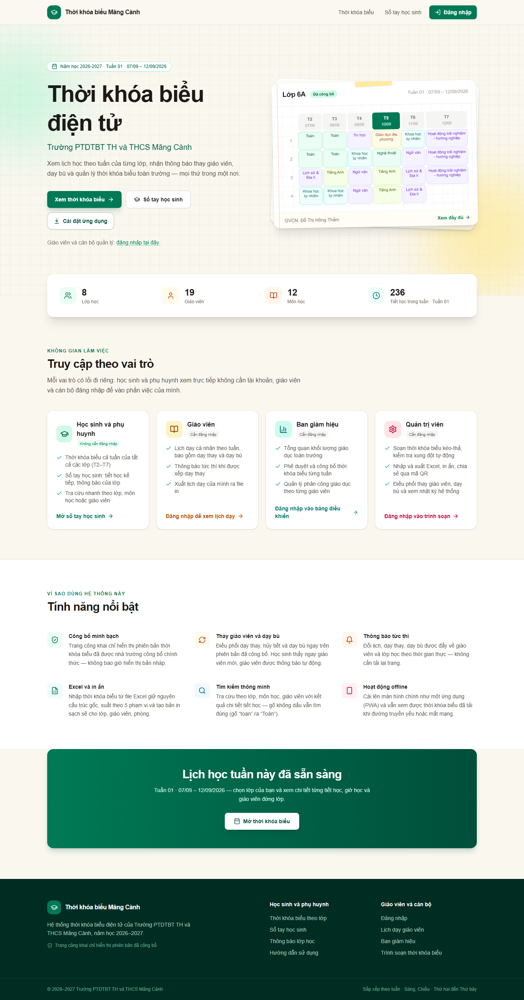
Hình 01 — Trang chủ (công khai). Điểm đến duy nhất cho 4 nhóm người dùng: thẻ Thời khóa biểu (học sinh/phụ huynh — không cần tài khoản), Sổ tay học sinh (PWA xem hôm nay & tuần), nút Đăng nhập (giáo viên / giám hiệu / quản trị). Thiết kế nhận diện trường Măng Cành, hỗ trợ tối ưu điện thoại.
Hình 02 — Đăng nhập. Form đăng nhập bằng tài khoản do trường cấp. Đăng nhập sai 10 lần trong 15 phút sẽ bị khóa tạm thời theo IP (chống dò mật khẩu). Sau khi đăng nhập, hệ thống tự chuyển đến đúng khu vực theo vai trò: giáo viên → /gv, ban giám hiệu → /bg, quản trị → /admin. Cookie phiên có cờ HttpOnly + SameSite=Lax, phiên sống 7 ngày.
Chức năng chi tiết
Tài khoản demo môi trường kiểm thử: admin, tkbadmin, principal, t01–t19 (mật khẩu tạm Dev@12345 — đã cảnh báo đổi trước khi dùng thật).
Liên kết nhanh xuống phần cài ứng dụng về màn hình chính (PWA).
Chân trang trỏ tới Hướng dẫn sử dụng bằng tiếng Việt (/huong-dan).
Thời khóa biểu công khai
Hình 03 — Chọn lớp. Lưới 8 thẻ lớp (6A → 9B) kèm giáo viên chủ nhiệm. Ô tìm kiếm hiểu cả tiếng Việt không dấu: gõ "toan" ra môn Toán, "nguyen thi" ra giáo viên họ Nguyễn Thị, "8a" ra lớp 8A. Đầu trang hiển thị tuần đang áp dụng (Tuần 01 · 07/09 – 12/09/2026).
Hình 04 — Thời khóa biểu lớp 6A. Chia rõ buổi Sáng (07:00–11:05) và buổi Chiều (13:00–15:25). Trên điện thoại hiển thị dạng danh sách từng ngày (ôm nhẹ khi cuộn); trên máy tính dạng bảng tuần. Ngày hiện tại được tô đậm viền. Badge "Đã công bố" xác nhận đây là bản chính thức.
Chức năng chi tiết
Mỗi ô tiết hiển thị môn, giáo viên, phòng học (nếu có); các trạng thái đặc biệt có nhãn riêng: Đổi GV · Đã hủy · Dạy bù.
Thứ Sáu khối 8–9 có đến 5 tiết sáng (Tiết 5 · 10:20) — đúng nguyên tắc nhà trường, không cố định số tiết.
Thứ Bảy là ngày học chính khóa, có tiết buổi sáng.
Nút xuất Excel/PDF (một tờ mỗi ngày), mã QR chia sẻ link lớp — học sinh quét là xem được ngay.
Nhập sai mã lớp (ví dụ /tkb/8C) trả trang lỗi 404 tiếng Việt "Không tìm thấy lớp".
Hướng dẫn sử dụng (trong ứng dụng)
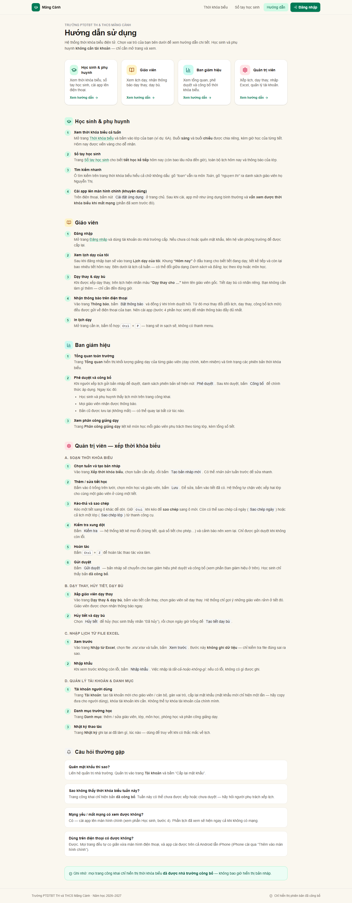
Hình 05 — /huong-dan. Sổ tay sử dụng viết bằng tiếng Việt dễ hiểu, chia 4 vai trò: Học sinh & phụ huynh · Giáo viên · Ban giám hiệu · Quản trị viên. Trang công khai (không cần đăng nhập), cũng xuất hiện trong menu dọc của giáo viên và quản trị.
Nội dung chính
Học sinh & phụ huynh: xem thời khóa biểu, sổ tay học sinh, tìm kiếm không dấu, cài app lên điện thoại (xem offline).
Giáo viên: đăng nhập, khung "Hôm nay", lịch tuần, dạy thay/dạy bù, bật thông báo đẩy, in lịch (Ctrl+P).
Ban giám hiệu: tổng quan, phê duyệt → công bố (kèm diễn giải điều gì xảy ra sau khi bấm).
Quản trị: soạn lịch từng bước (bản nháp → thêm/kéo-thả/Ctrl-sao-chép → Kiểm tra → Gửi duyệt), dạy thay & dạy bù, nhập Excel (xem trước → nhập khẩu), tài khoản, danh mục, nhật ký.
Mục Câu hỏi thường gặp: quên mật khẩu, chưa thấy lịch, mất mạng, dùng điện thoại.
Ứng dụng học sinh — Sổ tay (1/2)
Chụp trên khung màn hình điện thoại (390×844). Ứng dụng có vỏ riêng (không phải menu trang công khai) + thanh điều hướng đáy màn hình luôn ghim: Trang chủ · Thời khóa biểu · Thông báo · Hồ sơ.
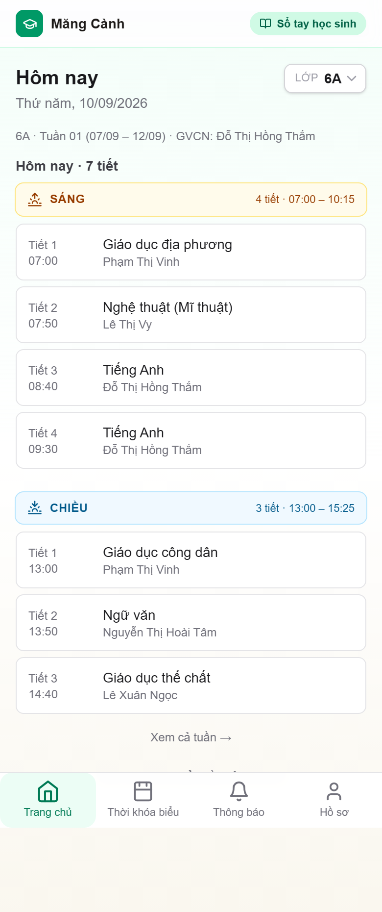
Hình 06 — Trang chủ /hsv. Chọn lớp một lần (hệ thống nhớ trên máy). Thẻ Tiết kế tiếp đếm ngược tới giờ học; danh sách hôm nay chia buổi Sáng/Chiều với giờ mỗi tiết.
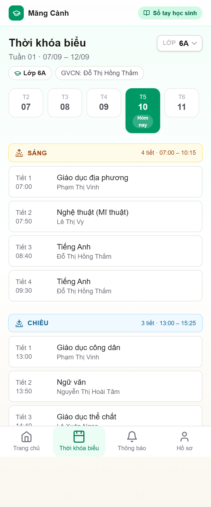
Hình 07 — Thời khóa biểu tuần. Dải ngày T2→T7 cỡ lớn, dễ bấm; "Hôm nay" nổi bật. Chi tiết ngày chia rõ Sáng (nhãn đỏ mận + giờ) / Chiều (nhãn xanh dương).
Chức năng chi tiết
Không cần tài khoản — chọn lớp lưu localStorage, đồng bộ qua mọi trang con (?lop=).
Hộp chọn lớp (góc phải) cập nhật tức thì khi đổi; deep-link và nút back/forward cũng cập nhật đúng.
Thẻ "Tiết kế tiếp": môn, giáo viên, phòng, dòng đếm ngược thời gian thực.
Buổi sáng/chiều hiển thị số tiết + khoảng giờ của buổi (vd "Sáng · 4 tiết · 07:00 – 10:15").
Ứng dụng học sinh — Sổ tay (2/2)
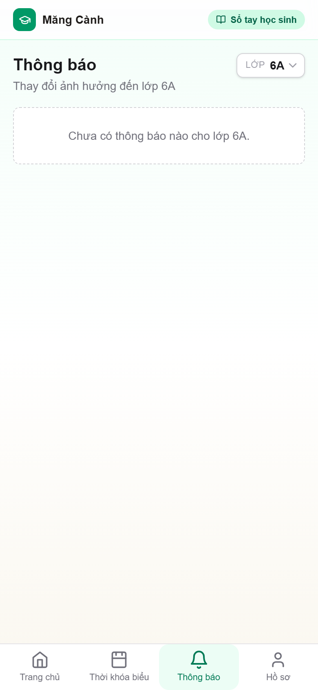
Hình 08 — Thông báo /hsv/thong-bao. Mọi thay đổi ảnh hưởng lớp đã chọn: công bố lịch mới, đổi giáo viên, hủy tiết, dạy bù — mỗi loại một nhãn màu riêng kèm mốc thời gian.
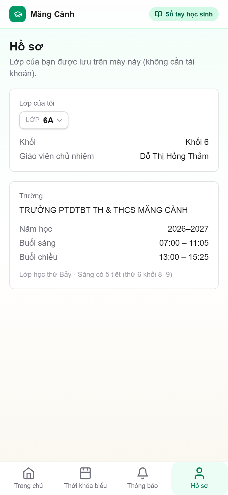
Hình 09 — Hồ sơ /hsv/ho-so. Lớp của tôi (đổi tại đây), GVCN, khối, thông tin trường, khung giờ buổi sáng/chiều. Ghi chú về ngày học thứ Bảy và 5 tiết sáng thứ Sáu.
Chức năng chi tiết
Thông báo lọc theo lớp — không nhiễu bởi lớp khác.
Cài app (PWA): thêm vào màn hình chính Android/iPhone; mở toàn màn hình như app thường, phần đã xem vẫn mở được khi mất mạng (service worker cache).
Bật thông báo đẩy: nhận tin ngay cả khi app đóng (Web Push qua VAPID đã cấu hình trên VPS).
Khu vực giáo viên
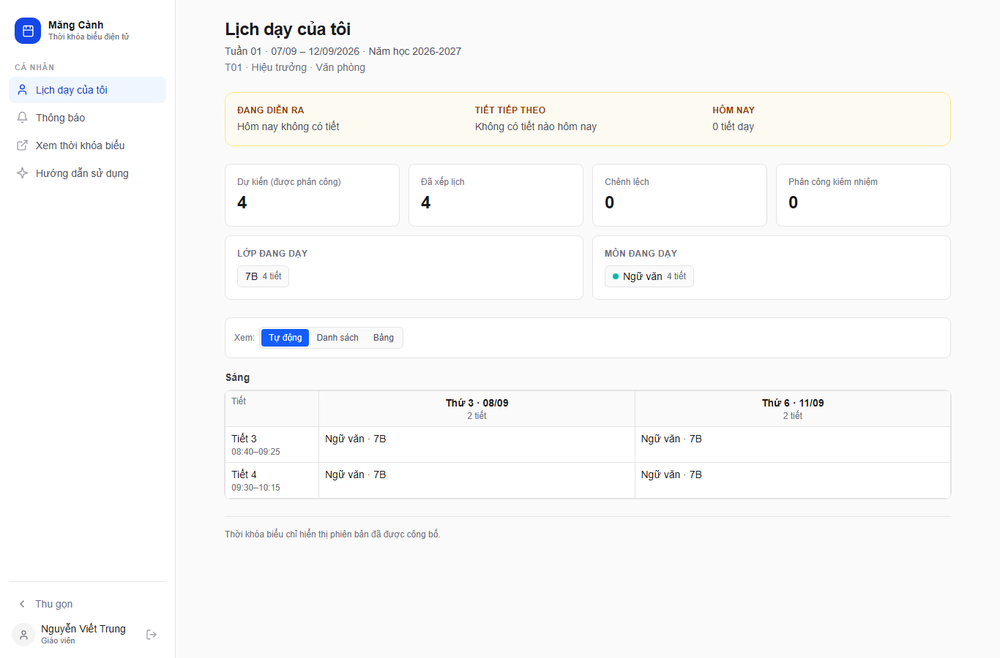
Hình 10 — Lịch dạy của tôi /gv. Dải chỉ số: Dự kiến (PCPN) · Đã xếp (thực tế) · Chênh lệch — giáo viên nhìn một chỗ biết đủ/thiếu tiết. Khung "Hôm nay" liệt kê tiết đang dạy và tiết kế tiếp; bên dưới là lịch tuần (đổi dạng Danh sách/Bảng, lọc theo lớp hoặc môn).
Hình 11 — Thông báo /gv/thong-bao. Hệ thống đẩy thông báo khi: được xếp dạy thay (kèm tên GV gốc), tiết bị hủy, tiết dạy bù được tạo, thời khóa biểu tuần mới được công bố. Bấm "Bật thông báo" để nhận trên điện thoại.
Chức năng chi tiết
Chỉ thấy dữ liệu của mình — không thấy lịch/lương tiết giáo viên khác.
Tiết dạy thay hiện nhãn "Dạy thay cho …"; số "Đã xếp" tự +1 để khớp thực tế giảng dạy.
In lịch cá nhân (Ctrl+P) với bản in sạch (đã tách CSS print).
Không có quyền truy cập /admin → chuyển hướng "Không có quyền truy cập".
Khu vực ban giám hiệu
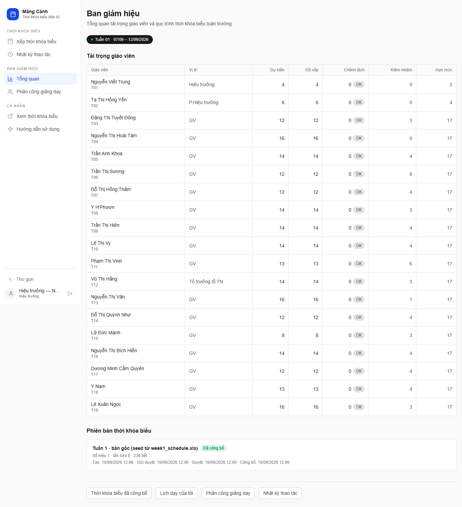
Hình 12 — Tổng quan /bg. Bảng khối lượng 19 giáo viên: dạy chính, kiêm nhiệm, tổng PCPN so với thực xếp — phát hiện ngay ai bị thiếu/thừa tiết. Danh sách phiên bản thời khóa biểu kèm trạng thái (NHÁP / CHỜ DUYỆT / ĐÃ CÔNG BỐ) và nút phê duyệt bản đang chờ.
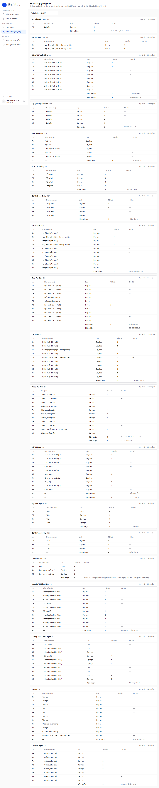
Hình 13 — Phân công giảng dạy /bg/phan-cong. Bảng nhóm theo giáo viên: từng lớp/môn phụ trách kèm số tiết, tổng Dạy + Kiểm nhiệm. Quản trị có thể thêm/sửa/gỡ phân công (bắt buộc không vượt ngưỡng policy).
Chức năng chi tiết
Duyệt & công bố: sau khi quản trị "Gửi duyệt", hiệu trưởng bấm Phê duyệt rồi Công bố — ngay lập tức: trang công khai đổi sang bản mới, toàn bộ giáo viên nhận thông báo, bản cũ chuyển LƯU TRỮ (quay lại được bất cứ lúc nào).
Không được tự sửa nội dung tiết học — phân quyền ghi chặt (chỉ đọc + duyệt).
Quản trị — Trình soạn thời khóa biểu
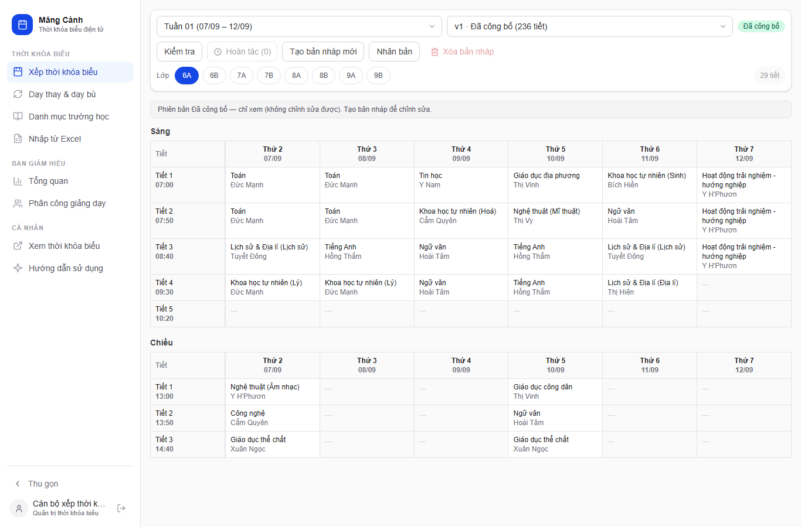
Hình 14 — /admin (đăng nhập tkbadmin). Lưới tuần đầy đủ: cột = lớp, hàng = buổi/tiết; ô có bài hiện môn + giáo viên. Chọn tuần, chọn phiên bản; nhãn trạng thái; thanh công cụ tạo bản nháp / nhân bản tuần / sao chép ngày / sao chép lớp.
Chức năng chi tiết
Thêm/sửa: bấm ô trống → panel chọn môn + giáo viên → Lưu; bấm ô đã có để sửa/xóa.
Kéo-thả: kéo tiết sang ô khác; giữ Ctrl khi kéo để sao chép (gốc giữ nguyên). Còn sao chép cả ngày hoặc cả lớp chỉ với 1 nút.
Chống xung đột cứng: hệ thống chặn xếp 2 lớp cho cùng giáo viên một tiết, 2 tiết cho cùng lớp một ô… (cả ràng buộc partial unique ở tầng DB — an toàn cả khi hai người cùng sửa).
Hoàn tác Ctrl+Z có hỗ trợ phía server (revision + undo log), và khóa phiên bản khi đã gửi duyệt.
Ô điều khiển revision trên từng thao tác — hai tab cùng sửa sẽ được phát hiện (409 VERSION_OUTDATED).
Quản trị — Danh mục, Tài khoản, Nhập Excel
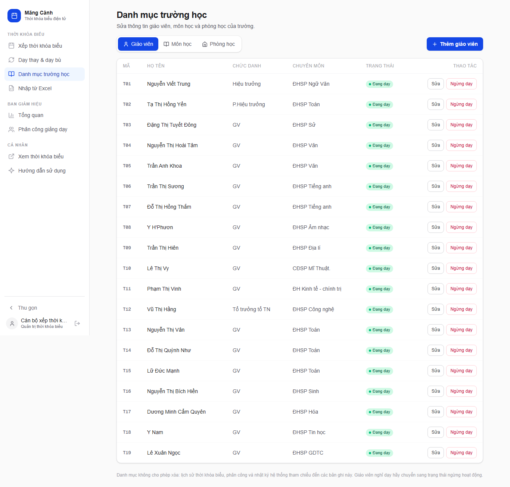
Hình 15 — Danh mục /admin/danh-muc. CRUD giáo viên (kèm tên viết tắt dùng khi nhập Excel), lớp, môn học + tổ hợp môn (VD "KHTN(L)" = KHTN·Lý), phòng học, phân công dự kiến (PCPN).
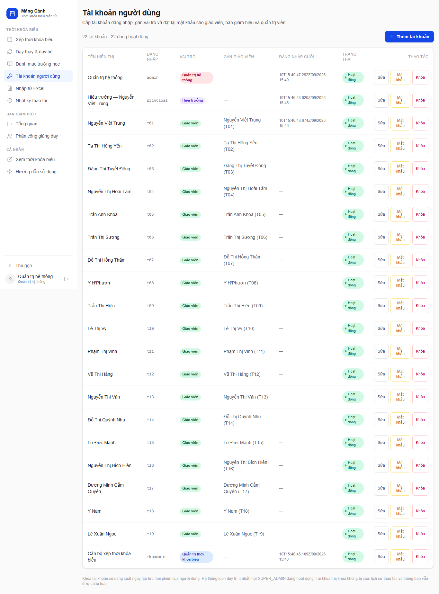
Hình 16 — Tài khoản /admin/tai-khoan. Tạo tài khoản, gán vai trò, cấp lại mật khẩu (hiện một lần rồi phải copy giao), khóa/mở; không thể tự khóa chính mình.
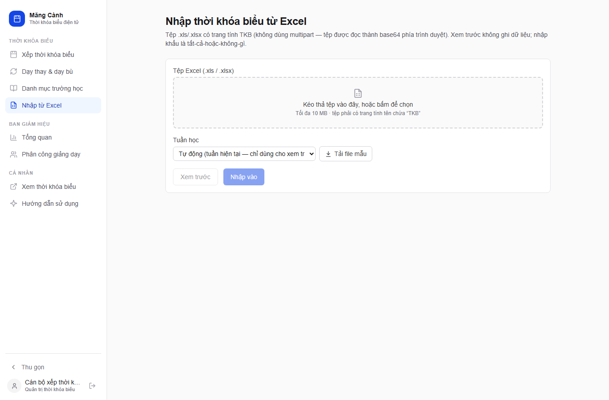
Hình 17 — Nhập Excel /admin/import. Kéo-thả tệp, tải file mẫu; "Xem trước" liệt kê đủ tiết, lỗi, cảnh báo, gợi ý ("Nguyễn Vân" → Nguyễn Thị Vân) trước khi "Nhập vào" (xác nhận từng bước).
Nhập Excel — quy trình 2 pha an toàn
Xem trước (không ghi): parse + ánh xạ + kiểm tra xung đột; phát hiện trùng ô trong tệp (DUPLICATE_SLOT), ngày ngoài tuần, sai khoảng ngày tiêu đề.
Nhập (all-or-nothing): chạy lại toàn bộ kiểm tra trong 1 transaction — có lỗi thì không ghi dòng nào; thành công tạo bản NHÁP mới (chưa ảnh hưởng lịch đang công bố).
Chỉ nhận .xls/.xlsx tối đa 10 MB, trang tính tên chứa "TKB"; Excel mẫu do hệ thống sinh ra khớp tuần + lớp hiện có.
Quản trị — Nhật ký & Dạy thay
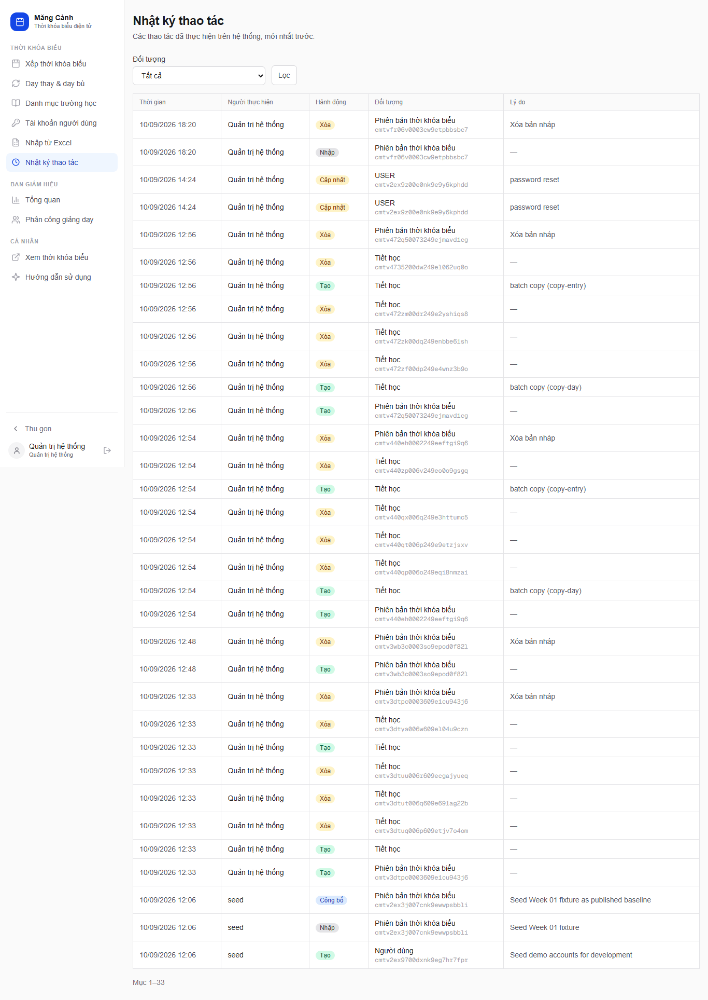
Hình 18 — Nhật ký thao tác /admin/audit. Ghi lại đầy đủ: ai, làm gì, lúc nào, trên đối tượng nào (TẠO/SỬA/XÓA/IMPORT/CÔNG BỐ…). Lọc theo loại đối tượng và phân trang — công cụ truy vết khi có thắc mắc "ai đổi lịch".
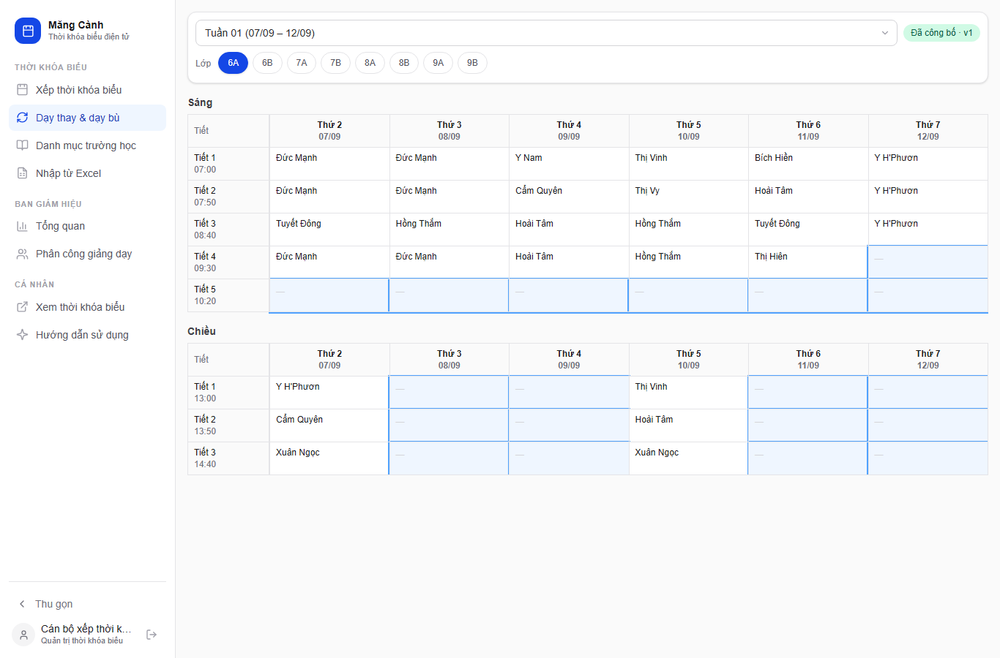
Hình 19 — Dạy thay & dạy bù /admin/thay-giao. Bấm vào tiết cần xử lý: chọn GV dạy thay (chỉ gợi ý GV rảnh, đã bận sẽ bị chặn kèm lý do) hoặc hủy tiết, rồi tạo tiết dạy bù vào ô trống khác.
Chức năng chi tiết
Dạy thay áp dụng trên bản ĐÃ CÔNG BỐ — hiệu lực tức thì, không cần công bố lại.
Hiệu ứng dây chuyền tự động: GV được xếp nhận thông báo; trang /gv của họ hiện "Dạy thay cho …"; chỉ số "Đã xếp" +1; trang công khai đổi tên GV tại tiết đó.
Hủy tiết → học sinh thấy nhãn "Đã hủy"; dạy bù tạo mục mới (MAKEUP) tại ô trống và cũng đẩy thông báo.
Hoàn tác thay đổi dễ dàng (hủy phân công dạy thay → tiết về NORMAL).
Kiểm thử chất lượng & vận hành
Kết quả kiểm thử tự động
Bộ kiểm tra
Kết quả
Ghi chú
Phân tích Excel (đơn vị + hồi quy tệp thật)
128/128
Bao gồm khớp 236 tiết Tuần 01 với fixture kiểm chứng độc lập
Engine xung đột / đối chiếu PCPN
Đạt
19 giáo viên khớp 100% dự kiến ↔ thực xếp
TypeScript strict + ESLint
0 lỗi
Chạy trên toàn bộ mã nguồn
Production build (standalone)
Thành công
Docker multi-stage, chạy user thường, healthcheck
Kiểm thử tải (100 & 200 người đồng thời)
Kịch bản
Tỷ lệ thành công
Độ trễ p50 / p99
100 truy cập đồng thời (trang có DB)
100%
≈ 2,4 s / 2,5 s (đỉnh bùng)
200 truy cập đồng thời
100%
≈ 4,6 s / 4,7 s (đỉnh bùng)
Kịch bản mô phỏng giờ cao điểm 7h sáng (cả trường mở app cùng lúc). Sau đỉnh, độ trễ trở về hàng chục mili-giây. PWA cache giúp lượt truy cập lại gần như không chạm server. RAM đo được: app ≈ 123 MB, PostgreSQL ≈ 82 MB — máy 2 GB còn nhiều dư địa.